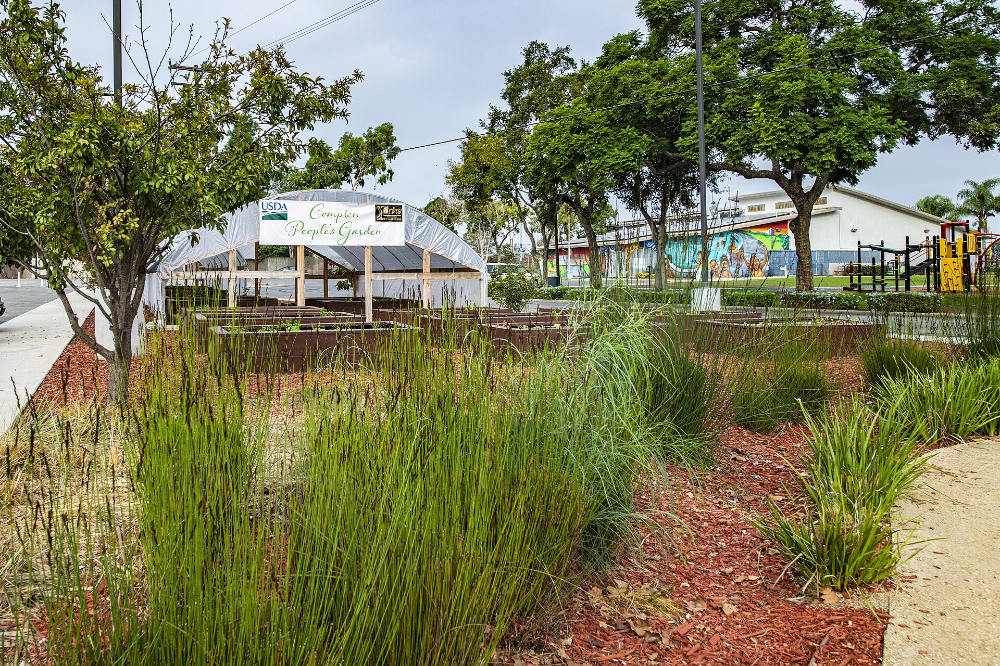

World Composting Blog
Latest blog posts and guides on composting methods, gear reviews, troubleshooting tips, and sustainable living advice.
Latest Blog Posts

Latest blog posts and guides on composting methods, gear reviews, troubleshooting tips, and sustainable living advice.
Watch the full step-by-step walkthroughs on YouTube, or grab the exact gear I recommend in my builds.